25-Day 12 Jyotirlinga Spiritual Yatra
Twelve Sacred Jyotirlingas. More Sacred Destinations. One Unforgettable Journey.
Join Khushi Tours & Travels on a proposed 25-day pilgrimage starting and ending in Bengaluru, visiting India's twelve revered Jyotirlingas and exploring additional spiritual destinations including Mathura, Vrindavan, Ayodhya, Gaya, Bodh Gaya and Puri, subject to route confirmation and operational review.
Contact us for the confirmed package price.
Official itemized quotation and departure dates provided on request.
All 12 Dwadasha Jyotirlingas Covered
The core spiritual pillar of this grand pilgrimage is the divine darshan of all twelve swayambhu manifestations of Lord Shiva across India.
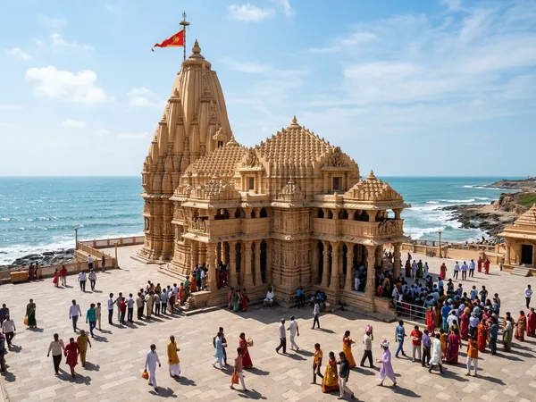
Somnath Jyotirlinga
The first among all twelve Jyotirlingas, revered as the Shrine Eternal on the Arabian Sea coast, celebrated for its magnificent coastal sandhya aarti.
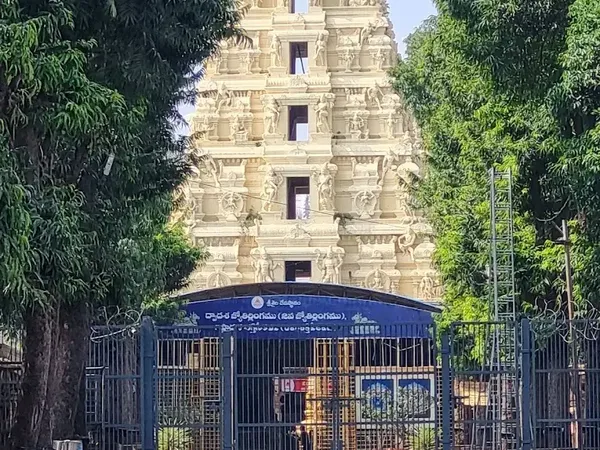
Mallikarjuna Jyotirlinga
Perched amidst the Nallamala forest hills on the Krishna River, unique as both a sacred Jyotirlinga and a Maha Shakti Peeth (Bhramaramba Devi).
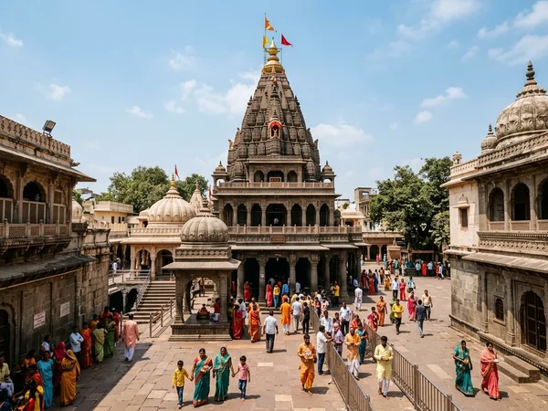
Mahakaleshwar Jyotirlinga
The only south-facing (Dakshinmukhi) Jyotirlinga, situated on the sacred Shipra River in holy Avantika, world-famous for its divine Bhasma Aarti.
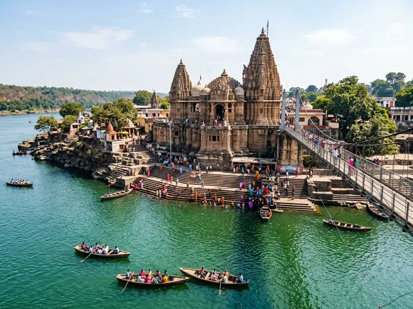
Omkareshwar Jyotirlinga
Consecrated on holy Mandhata Island shaped naturally like the sacred 'Om' syllable in the Narmada River, enshrining Omkareshwar and Mamleshwar.
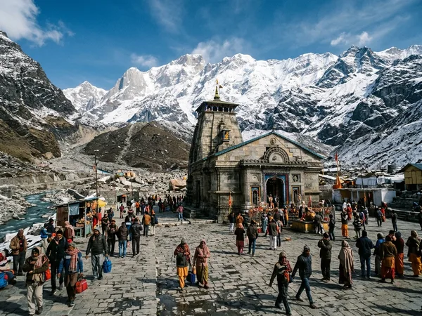
Kedarnath Jyotirlinga
The highest Jyotirlinga at 3,583m in the Garhwal Himalayas, surrounded by snow-clad peaks, accessible via a demanding 16 km mountain trek.
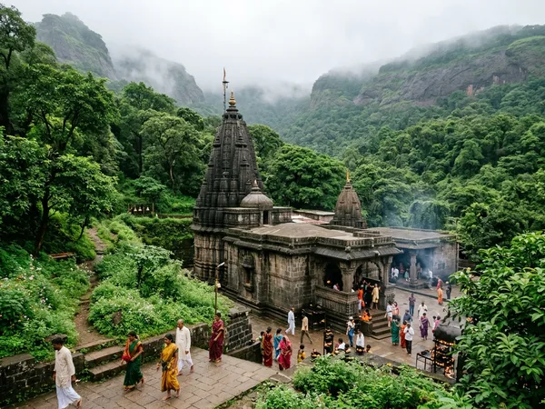
Bhimashankar Jyotirlinga
Nestled in the lush evergreen Sahyadri hills, the sacred source of the Bhima River renowned for its ancient Nagara black stone architecture.
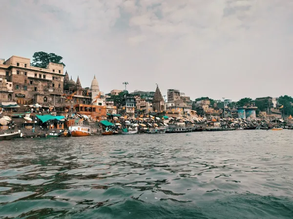
Kashi Vishwanath
The eternal heart of spiritual India along the holy Ganges in Varanasi, enshrining the golden-spire Jyotirlinga and newly restored grand corridor.
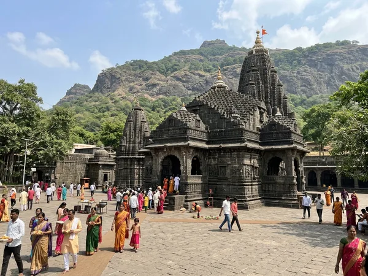
Trimbakeshwar Jyotirlinga
Situated at the foothills of Brahmagiri near the source of holy Godavari River, enshrining a three-faced linga embodying Brahma, Vishnu, and Shiva.
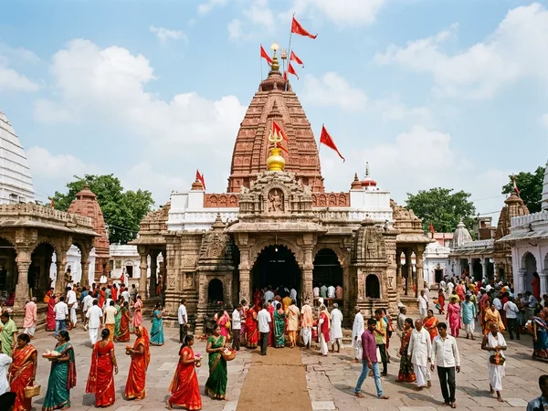
Baidyanath Jyotirlinga
Revered as the Kamna Linga where Lord Shiva resides as the divine healer (Vaidya), set in a venerable complex of 21 sacred stone shrines.
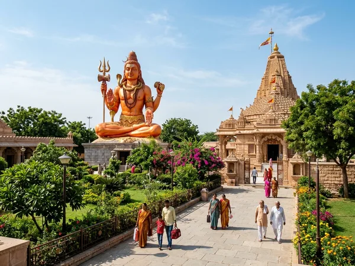
Nageshwar Jyotirlinga
Celebrated as the cosmic pillar of divine protection near sacred Dwarka, featuring an underground sanctum and an imposing seated statue of Lord Shiva.
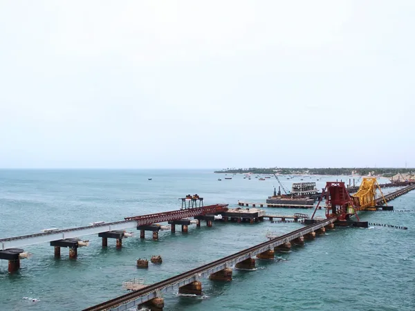
Ramanathaswamy Jyotirlinga
Consecrated by Bhagwan Shri Ram on Rameshwaram Island, world-renowned for its longest pillared corridors, Agni Theertham, and 22 sacred well baths.
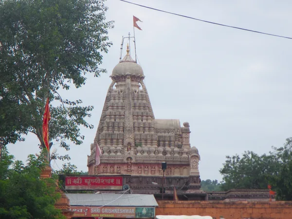
Grishneshwar Jyotirlinga
The twelfth and final Jyotirlinga, built from carved red basalt stone with a five-tier shikhara, situated peacefully near the historic Ellora Caves.
Additional Sacred Destinations — Subject to Route Confirmation
These revered holy places are scheduled as conditional, route-dependent extensions. Visits are undertaken only when highway transit timings, weather clearances, driver duty limits, and local temple darshan queues permit without compromising the core 12 Jyotirlinga pilgrimage schedule.
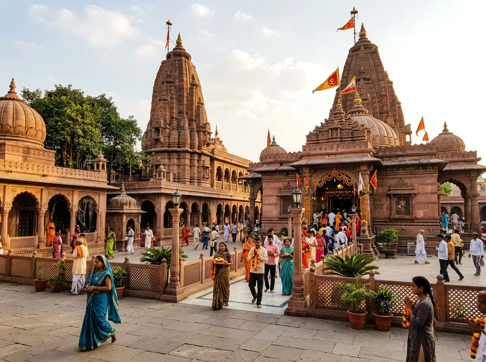
Mathura
Uttar Pradesh • Sacred Braj Bhoomi
The hallowed birthplace of Lord Shri Krishna on the sacred Yamuna River. A focal center of devotional Hinduism resonating with ancient lore and timeless hymns.
- Shri Krishna Janmabhoomi Mandir Complex
- Keshavdev Ji Mandir & Potra Kund
- Sacred Yamuna River Ghats (subject to arrival hour)
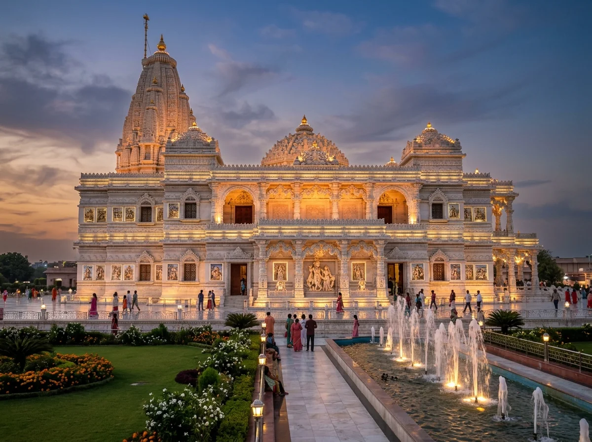
Vrindavan
Uttar Pradesh • Divine Bhakti Dham
The sacred forest of Radha and Krishna's childhood pastimes, celebrated worldwide for its deeply spiritual ambiance, majestic marble temples, and vibrant devotional chants.
- Shri Banke Bihari Temple Darshan
- Magnificent White Marble Prem Mandir
- ISKCON Vrindavan (Krishna Balaram Mandir)
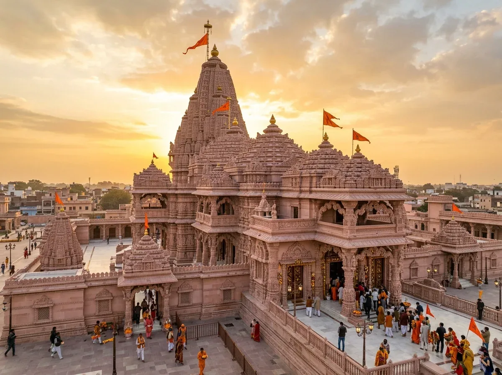
Ayodhya
Uttar Pradesh • Maryada Purushottam Dham
The sacred city of Bhagwan Shri Ram on the banks of holy Saryu River, featuring the newly consecrated Ram Janmabhoomi Mandir and ancient Hanuman Garhi.
- Shri Ram Janmabhoomi Mandir Darshan
- Historic Hanuman Garhi Fort Temple
- Saryu River Ghats & Evening Aarti
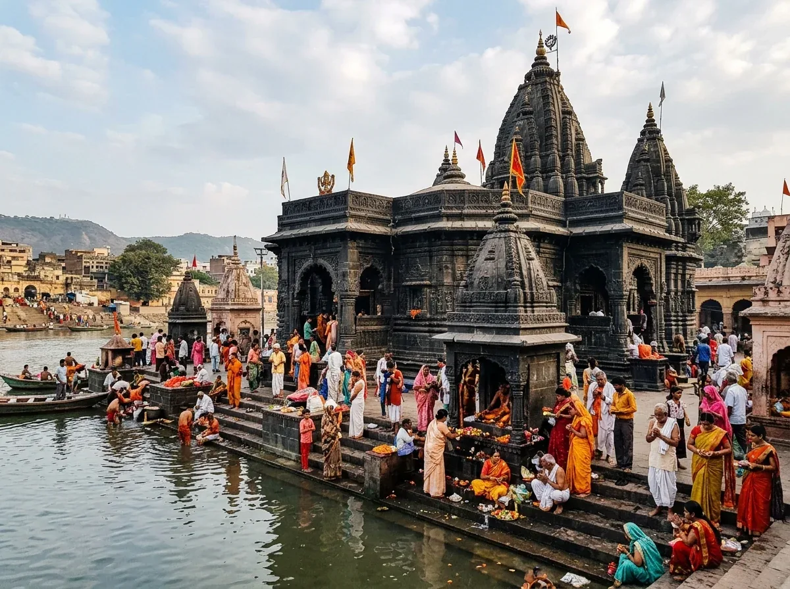
Gaya
Bihar • Sacred Falgu River
The ancient holy city revered across India for ancestral rites, situated along the sacred Falgu River featuring the venerable stone Vishnupad Temple.
- Vishnupad Temple Darshan (Lord Vishnu's footprint)
- Akshayavat Sacred Banyan Tree
- Falgu River Bank Prayers
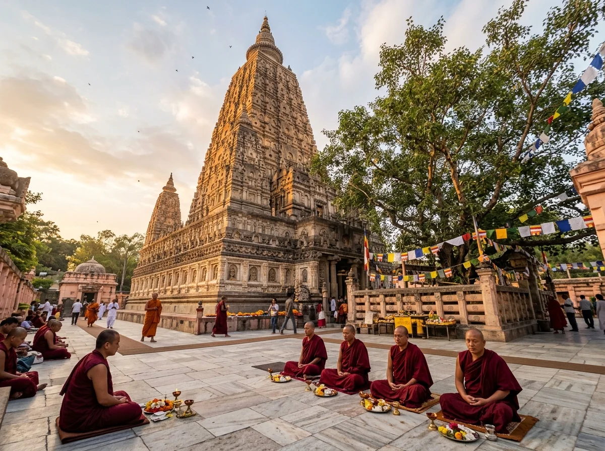
Bodh Gaya
Bihar • Enlightenment Mahabodhi
One of the most sacred spiritual sanctuaries on Earth, where Bhagwan Buddha attained supreme enlightenment beneath the sacred Bodhi Tree.
- UNESCO World Heritage Mahabodhi Temple Complex
- Sacred Bodhi Tree & Vajrasana Throne
- Great Buddha Statue (80-foot stone monument)
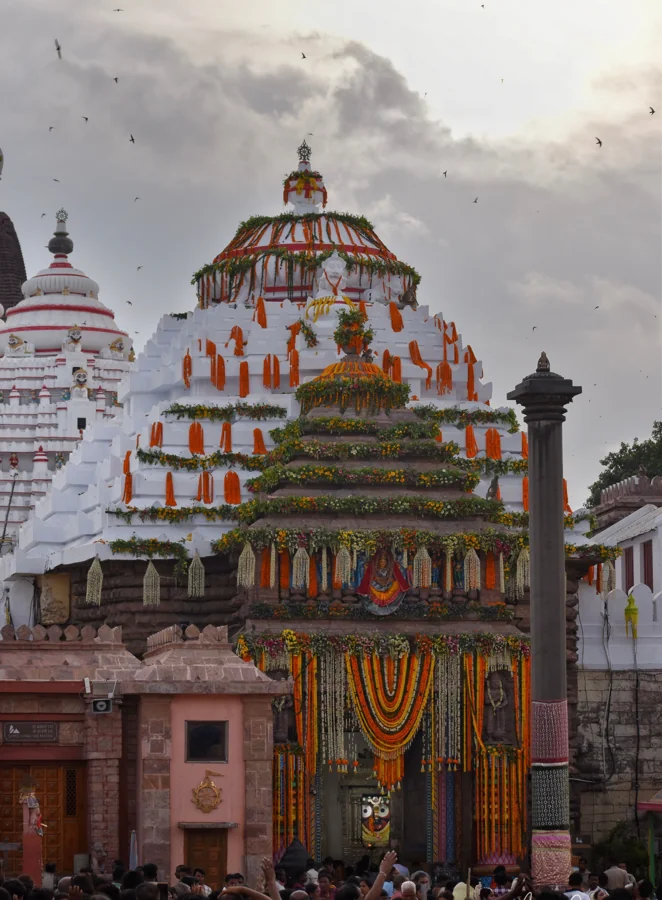
Puri
Odisha • Eastern Char Dham
The holy coastal Dham of Lord Jagannath on the Bay of Bengal, known worldwide for its grand spiritual heritage, monumental stone architecture, and divine Mahaprasad.
- Shri Jagannath Temple Darshan
- Sacred Swargadwar Beach Area
- Konark Sun Temple view (if highway schedule allows)
Proposed 25-Day Comprehensive Itinerary
A proposed pan-India pilgrimage circuit starting and concluding in Bengaluru. All daily itineraries remain Proposed pending tour operator approval, featuring verified highway estimates, mandatory dual driver rotations, and operational review advisories.
Karnataka, Maharashtra & Gujarat Circuit (Days 1–6)
Covering Bhimashankar, Trimbakeshwar, Grishneshwar, Somnath, and Nageshwar Jyotirlingas.
D1
Day 1: Departure from Bengaluru • Transit towards Northern Karnataka / Maharashtra
Border
↓
Route: Bengaluru → Tumakuru → Chitradurga → Hubballi → Belagavi / Kolhapur border area.
Starting Point & Overnight: Starts at Bengaluru (designated pickup hubs) • Overnight stay in Belagavi / Kolhapur area.
Driving Distance & Estimated Duration: ~500 km (approx. 9–10 hours driving, subject to highway conditions & toll queues).
Planned Activities: Morning departure in AC Volvo coach with introductory devotional prayer, planned breakfast and lunch halts, and driver changeover.
D2
Day 2: Sahyadri Hills • Bhimashankar Jyotirlinga Darshan • Transit to Nashik
↓
Route: Kolhapur → Pune bypass → Manchar → Bhimashankar → Sangamner → Nashik.
Starting Point & Overnight: Starts at Kolhapur area • Overnight stay in Nashik.
Driving Distance & Estimated Duration: ~420 km (approx. 9–10 hours road time including mountain ghat speed limits).
Planned Temples & Sightseeing: Sacred Bhimashankar Jyotirlinga Darshan in Sahyadri forest sanctuary, origin of Bhima River.
D3
Day 3: Trimbakeshwar & Grishneshwar Jyotirlingas • Transit towards Gujarat
↓
Route: Nashik → Trimbakeshwar (30 km) → Chhatrapati Sambhajinagar / Ellora (180 km) → Dhule highway corridor (160 km).
Starting Point & Overnight: Starts at Nashik • Overnight stay in Dhule / Maharashtra-Gujarat border area.
Driving Distance & Estimated Duration: ~370–430 km (approx. 9–11 driving hours plus queue times).
Planned Temples & Sightseeing: Trimbakeshwar Jyotirlinga (Godavari origin, three-faced linga) and Grishneshwar Jyotirlinga (12th Jyotirlinga near Ellora).
D4
Day 4: Saurashtra Coastal Highway • Somnath Jyotirlinga Evening Aarti
↓
Route: Gujarat border → Bhavnagar bypass → Mahuva → Veraval → Somnath (Prabhas Patan).
Starting Point & Overnight: Starts at Gujarat border • Overnight stay in Somnath.
Driving Distance & Estimated Duration: ~480 km (approx. 9–10 hours driving on NH-51 coastal highway).
Planned Temples & Sightseeing: Somnath Jyotirlinga on Arabian Sea coast; witness the magnificent evening Sandhya Aarti and light-and-sound show.
D5
Day 5: Nageshwar Jyotirlinga • Dwarkadhish • Central Gujarat Transit
↓
Route: Somnath → Porbandar coastal road → Dwarka / Nageshwar (230 km) → Jamnagar / Rajkot corridor (180 km).
Starting Point & Overnight: Starts at Somnath • Overnight stay in Rajkot / Jamnagar area.
Driving Distance & Estimated Duration: ~410 km (approx. 8–9 hours driving plus darshan).
Planned Temples & Sightseeing: Nageshwar Jyotirlinga (underground linga & giant seated Shiva statue); conditional brief view of Dwarkadhish Temple if afternoon timings permit (temple reopens 5:00 PM).
D6
Day 6: Central Gujarat to Madhya Pradesh Corridor • Mandatory Scheduled Driver Rest
Day
↓
Route: Rajkot / Ahmedabad bypass → Godhra → Dahod → Dhar → Indore / Ujjain highway gateway.
Starting Point & Overnight: Starts at Rajkot • Overnight stay in Indore / Omkareshwar gateway.
Driving Distance & Estimated Duration: ~480 km (approx. 9–10 hours on multi-lane expressways).
Planned Activities: Dedicated highway transit day with scheduled meal and hydration intervals. No strenuous temple queues.
Central India & The Braj Pilgrimage Corridor (Days 7–10)
Omkareshwar, Mahakaleshwar, plus conditional spiritual stops at Mathura & Vrindavan.
D7
Day 7: Omkareshwar Jyotirlinga (Narmada River) • Drive to Holy Ujjain
↓
Route: Indore gateway → Omkareshwar (80 km) → Ujjain (135 km).
Starting Point & Overnight: Starts near Indore • Overnight stay in Ujjain.
Driving Distance & Estimated Duration: ~215 km (approx. 5 hours driving time).
Planned Temples & Sightseeing: Holy Narmada River suspension bridge / boat crossing to Mandhata Island; Omkareshwar & Mamleshwar Jyotirlinga darshan. Evening arrival in Ujjain; visit Ram Ghat on the holy Shipra River.
D8
Day 8: Mahakaleshwar Jyotirlinga (Ujjain) • Transit towards Mathura / Uttar
Pradesh
↓
Route: Ujjain → Shajapur → Guna → Shivpuri → Gwalior / Agra highway corridor.
Starting Point & Overnight: Starts at Ujjain • Overnight stay in Gwalior / Agra corridor (Operator recommended intermediate halt).
Driving Distance & Estimated Duration: ~450 km to Gwalior (approx. 8–9 hours driving) • Full stretch to Mathura is ~650 km.
Planned Temples & Sightseeing: Early morning darshan at sacred Mahakaleshwar Jyotirlinga (Dakshinmukhi swayambhu linga) and Mahakal Lok corridor.
D9
Day 9: Mathura & Vrindavan • Additional Sacred Destinations (Conditional
Visit)
↓
Route: Gwalior / Agra corridor → Mathura → Vrindavan → Yamuna Expressway.
Starting Point & Overnight: Starts near Agra / Mathura • Overnight stay in Mathura / Vrindavan or Delhi NCR bypass.
Driving Distance & Estimated Duration: ~80–120 km local driving (approx. 3–4 hours road time amidst dense local traffic).
Planned Temples & Sightseeing (Conditional Stop):
• Mathura: Shri Krishna Janmabhoomi Mandir Complex and Potra Kund.
• Vrindavan: Banke Bihari Mandir and illuminated Prem Mandir.
D10
Day 10: Transit along Himalayan Foothills • Haridwar & Rishikesh Gateway
↓
Route: Yamuna Expressway / Eastern Peripheral Expressway → Meerut expressway → Roorkee → Haridwar.
Starting Point & Overnight: Starts at Mathura / NCR • Overnight stay in Haridwar / Rishikesh.
Driving Distance & Estimated Duration: ~320 km (approx. 6–7 hours driving).
Planned Temples & Sightseeing: Arrival at Himalayan foothills; evening Ganga Aarti at holy Har Ki Pauri on the Ganges River.
The Garhwal Himalayas & Kedarnath Yatra (Days 11–14)
Ascent through Mandakini River valley, the sacred 16 km Kedarnath trek, and high-altitude darshan.
D11
Day 11: Haridwar to Guptkashi / Sonprayag • Mandakini Valley Mountain Ascent
↓
Route: Rishikesh → Devprayag (Alaknanda & Bhagirathi confluence) → Srinagar → Rudraprayag → Guptkashi / Sitapur / Sonprayag base camp.
Starting Point & Overnight: Starts at Haridwar • Overnight stay in Guptkashi / Sitapur / Sonprayag.
Driving Distance & Estimated Duration: ~205 km mountain road (approx. 8–10 hours due to hill driving regulations and checkpoint controls).
Planned Sightseeing: Views of sacred river confluences (Prayags); Mandakini valley scenery.
D12
Day 12: Kedarnath Dham — The Sacred 16 km Mountain Trek • Evening Darshan
↓
Route: Sitapur / Sonprayag → Local shuttle to Gaurikund (1,982m) → 16 km steep mountain climb to Kedarnath Dham (3,583m / 11,755 ft).
Starting Point & Overnight: Starts at Gaurikund trek point • Overnight stay in basic guesthouse / ashram at Kedarnath top.
Trek Distance & Estimated Duration: 16 km uphill trek on foot (approx. 7–9 hours walking; 4–5 hours on pony).
Planned Temples: Sacred Kedarnath Jyotirlinga Darshan, ancient Pandava-era shrine surrounded by snow peaks.
⚠️ Crucial Physical & Operational Warnings for Kedarnath:
- Steep Physical Demands: Elevation gain from 1,982m to 3,583m places heavy cardiovascular and joint strain. Risk of Acute Mountain Sickness (AMS).
- Mandatory Registration: Uttarakhand Government Char Dham biometric registration slip is mandatory for physical clearance.
- Helicopter & Pony Services: Helicopter flights (Phata/Sirsi/Guptkashi) and ponies/dolis are strictly subject to quota availability, passenger body weight limits, and weather clearances. These are strictly not included in base bus package fare and must be booked directly.
D13
Day 13: Kedarnath Morning Pooja • Downhill Descent to Base Camp
↓
Route: Kedarnath temple top → 16 km descent to Gaurikund → Local shuttle back to Sonprayag / Sitapur.
Starting Point & Overnight: Starts at Kedarnath top • Overnight stay in Guptkashi / Sitapur base hotel.
Trek Distance & Estimated Duration: 16 km downhill trek (approx. 5–7 hours walking). Base transit 1 hour.
Planned Temples & Sightseeing: Early morning prayers, view of the miraculous Bhim Shila rock behind the temple sanctum, descent into Mandakini valley.
D14
Day 14: Descent from Garhwal Hills • Return to Haridwar Gateway
↓
Route: Guptkashi → Rudraprayag → Srinagar → Rishikesh → Haridwar.
Starting Point & Overnight: Starts at Guptkashi • Overnight stay in Haridwar.
Driving Distance & Estimated Duration: ~205 km mountain road (approx. 7–9 hours driving).
Planned Activities: Smooth downhill mountain return; rest evening in Haridwar.
Sacred Uttar Pradesh, Bihar & Purvanchal (Days 15–18)
Ayodhya, Kashi Vishwanath, Gaya, Bodh Gaya, and Baba Baidyanath Dham.
D15
Day 15: Haridwar to Ayodhya • The Shri Ram Janmabhoomi Corridor
↓
Route: Haridwar → Moradabad bypass → Bareilly → Sitapur → Lucknow bypass → Ayodhya.
Starting Point & Overnight: Starts at Haridwar • Overnight stay in Ayodhya.
Driving Distance & Estimated Duration: ~580–610 km (approx. 12–14 driving hours on UP highways).
Planned Activities: Highway transit across northern Uttar Pradesh; evening arrival in holy Ayodhya.
D16
Day 16: Ayodhya Ram Janmabhoomi Darshan • Transit to Holy Kashi (Varanasi)
↓
Route: Ayodhya → Sultanpur → Jaunpur → Varanasi (Kashi).
Starting Point & Overnight: Starts at Ayodhya • Overnight stay in Varanasi.
Driving Distance & Estimated Duration: ~200 km (approx. 4.5–5.5 hours driving).
Planned Temples & Sightseeing:
• Ayodhya (Conditional Stop): Shri Ram Janmabhoomi Mandir Darshan, Hanuman
Garhi, Saryu River Ghats.
• Varanasi: Evening arrival in Kashi; witness the world-famous Ganga Aarti at
Dashashwamedh Ghat.
D17
Day 17: Kashi Vishwanath Jyotirlinga Darshan • Transit to Bodh Gaya
↓
Route: Varanasi city → Chandauli → Sasaram → Dobhi → Bodh Gaya.
Starting Point & Overnight: Starts at Varanasi • Overnight stay in Bodh Gaya / Gaya.
Driving Distance & Estimated Duration: ~250 km (approx. 5.5–6.5 hours on Grand Trunk Road / NH-19).
Planned Temples & Sightseeing:
• Varanasi: Early morning Kashi Vishwanath Jyotirlinga darshan, Annapurna
Mandir, and Kaal Bhairav Mandir.
• Bodh Gaya (Conditional Stop): Evening visit to UNESCO World Heritage Mahabodhi
Temple and sacred Bodhi Tree.
D18
Day 18: Gaya Pind Daan / Vishnupad Mandir • Baba Baidyanath Dham (Deoghar)
↓
Route: Bodh Gaya → Gaya → Nawada → Jamui → Banka → Deoghar (Jharkhand).
Starting Point & Overnight: Starts at Bodh Gaya • Overnight stay in Deoghar.
Driving Distance & Estimated Duration: ~220 km (approx. 5.5–6.5 hours on state highways).
Planned Temples & Sightseeing:
• Gaya (Conditional Stop): Morning prayers at Vishnupad Temple on Falgu River
and Akshayavat tree.
• Deoghar: Evening arrival in the holy Santhal Parganas; initial visit to
Baidyanath complex.
Eastern Coast, Srisailam & Rameshwaram Circuit (Days 19–25)
Baidyanath, Jagannath Puri, Mallikarjuna (Srisailam), Ramanathaswamy, and journey conclusion in Bengaluru.
D19
Day 19: Baba Baidyanath Jyotirlinga Darshan • Transit towards Coastal Odisha
↓
Route: Deoghar → Dumka → Asansol → Bankura → Kharagpur → Balasore corridor.
Starting Point & Overnight: Starts at Deoghar • Overnight stay in Balasore / Kharagpur corridor (Operator recommended intermediate halt).
Driving Distance & Estimated Duration: ~380–420 km to Balasore (approx. 8–9 hours driving) • Extended stretch to Puri is ~650 km.
Planned Temples & Sightseeing: Early morning darshan at sacred Baba Baidyanath Jyotirlinga (Kamna Linga).
D20
Day 20: Jagannath Puri Dham Darshan • Coastal Odisha Corridor
↓
Route: Balasore → Cuttack → Bhubaneswar → Puri Jagannath Dham (65 km) → Brahmapur corridor (~180 km).
Starting Point & Overnight: Starts in northern Odisha • Overnight stay in Puri / Brahmapur area.
Driving Distance & Estimated Duration: ~250–300 km (approx. 6–7 hours driving).
Planned Temples & Sightseeing (Conditional Stop): Shri Jagannath Temple Darshan (Lord Jagannath, Balabhadra, Devi Subhadra), sacred Swargadwar, and Anand Bazaar Mahaprasad.
D21
Day 21: Coastal NH-16 Southward Transit • Journey towards Andhra Pradesh
↓
Route: Brahmapur → Srikakulam → Visakhapatnam bypass → Rajahmundry → Vijayawada corridor.
Starting Point & Overnight: Starts at Brahmapur • Overnight stay in Vijayawada / Guntur area (Operator recommended safe rest stop).
Driving Distance & Estimated Duration: ~500 km (approx. 9–10 hours on NH-16 multi-lane highway).
Planned Activities: Continuous highway transit southward along the Bay of Bengal coastal highway; scheduled refreshment breaks.
D22
Day 22: Nallamala Forest Ascent • Mallikarjuna Jyotirlinga Darshan (Srisailam)
↓
Route: Vijayawada → Guntur → Vinukonda → Dornala → Srisailam (260 km, approx. 6 hours). Afternoon descent southwards (~180 km).
Starting Point & Overnight: Starts at Vijayawada • Overnight stay in Dornala / Markapur / Kadapa area.
Driving Distance & Estimated Duration: ~440 km total including ghat road time.
Planned Temples & Sightseeing: Mallikarjuna Jyotirlinga and Bhramaramba Devi Shakti Peeth darshan on the holy Krishna River amidst Nallamala forest sanctuary.
D23
Day 23: Transit across Tamil Nadu towards Rameshwaram Island
↓
Route: Kadapa / Chittoor → Vellore → Tiruvannamalai / Tiruchirappalli → Madurai bypass → Ramanathapuram → Pamban Bridge → Rameshwaram.
Starting Point & Overnight: Starts in southern Andhra • Overnight stay in Rameshwaram Island.
Driving Distance & Estimated Duration: ~560–600 km (approx. 11–12 hours driving).
Planned Activities: Travel across Tamil Nadu towards the southern tip of India; cross the iconic Pamban Sea Bridge onto Rameshwaram Island.
D24
Day 24: Ramanathaswamy Jyotirlinga Darshan • 22 Theertham Bath • Dhanushkodi
↓
Route: Rameshwaram local → Dhanushkodi (20 km) → Ramanathapuram → Madurai transit (170 km).
Starting Point & Overnight: Starts at Rameshwaram • Overnight stay in Rameshwaram / Madurai.
Driving Distance & Estimated Duration: ~190 km (approx. 4.5 hours road time).
Planned Temples & Sightseeing: Sacred holy dip at Agni Theertham, traditional 22 temple well baths inside Ramanathaswamy Temple, darshan of the Shivalinga consecrated by Bhagwan Shri Ram, and afternoon visit to Ram Setu viewpoint at Dhanushkodi beach.
D25
Day 25: Return Journey to Bengaluru • Yatra Conclusion
↓
Route: Madurai / Dindigul → Karur → Salem → Dharmapuri → Krishnagiri → Hosur → Bengaluru.
Starting Point & Destination: Starts at Madurai area • Concludes at Bengaluru (Home drop at designated hubs).
Driving Distance & Estimated Duration: ~440 km (approx. 7.5–8.5 hours on NH-44 four-lane highway).
Planned Activities: Farewell devotional prayers, smooth highway cruising on NH-44, scheduled lunch and refreshment halts, evening drop in Bengaluru with hearts filled with the divine blessings of all 12 Jyotirlingas and India's greatest shrines.
Package Inclusions & Exclusions — Subject to Final Operator Quotation
Every aspect of your pilgrimage is organized with complete transparency. Items below represent the proposed package standard and will be formally verified in your official booking quotation based on coach availability and hotel allotment.
Package Inclusions (If Confirmed)
- ✓ AC Volvo Transportation: Dedicated AC Volvo coach as specified in the confirmed operator quotation, equipped with reclining seats and air suspension.
- ✓ Driver Charges & Allowances: Professional commercial driver fees, driver night allowances, interstate road permits, toll charges, and parking fees according to the final quotation.
- ✓ Temple Entry & Local Fares: Applicable general temple entry tickets and authorized local auto-rickshaw or connecting shuttle bus fares, if confirmed in the final voucher.
- ✓ Deluxe Accommodation: 3-star deluxe hotel rooms on a double-sharing basis with attached bathrooms and running hot water, if confirmed.
- ✓ Three Pure Vegetarian Meals: Wholesome daily breakfast, lunch, and dinner served as 100% pure vegetarian satvik meals, according to the final meal plan.
Package Exclusions
- ✗ Helicopter / Chopper Fares: Any helicopter services for Kedarnath or other shrines (pilgrims arrange tickets directly via official portal).
- ✗ Doli / Palanquin Fares: Personal doli carriers for mountain treks.
- ✗ Horse / Pony / Mule Fares: Animal rides or personal luggage porters for mountain ascents.
- ✗ Personal Expenses: Laundry, telephone calls, room service, special puja dakshina, and pooja samagri.
- ✗ Airfare & Train Fare: Connecting flight or train journeys before or after the tour.
- ✗ Travel & Medical Insurance: Individual medical or travel insurance coverage.
- ✗ Extra Meals & Beverages: Snacks, packaged drinks, or meals outside scheduled group dining hours.
- ✗ Unforeseen Disruptions: Costs arising from landslides, severe weather closures, roadblocks, political strikes, or medical emergencies.
- ✗ Any Item Not Explicitly Listed: Any service, excursion, or fee not specifically itemized in the final confirmed quotation.
Why Pilgrims Trust Khushi Travels
Organizing long-distance devotional group travel from Bengaluru with proven highway standards and verified operations.
100% Owned Fleet
Maintained in-house by expert mechanics with zero sub-contracting risk for maximum reliability on pan-India highways.
Pure Vegetarian Satvik
Three daily hot, wholesome vegetarian meals freshly prepared and served in compliance with religious traditions.
Senior Citizen Priority
Experienced tour managers assisting with accessible boarding, luggage coordination, queue guidance, and darshan pacing.
Transparent Quotation
Line-item breakdown provided in writing. All confirmed package details, inclusions, and exclusions documented upfront.
Approved Booking & Cancellation Policy
An advance booking deposit is required upon itinerary acceptance to secure hotel reservations and coach allotment. Cancellation terms, refund eligibility windows, and payment schedules are governed by operator hotel and transport commitment deadlines and are provided in writing with your personalized quotation. Proposed routes remain subject to adjustment in the event of force majeure, severe weather, or state highway directives.
Booking & Important Travel Information
Essential payment terms and key travel advisories for our 25-day spiritual yatra.
Payment Terms
50% Advance Payment
50% of the package amount must be paid at the time of booking confirmation.
50% Balance Payment
The remaining 50% must be paid at least one month before the tour start date.
Important Travel Notice
The itinerary listed above is subject to change based on weather, road conditions, and local operational factors. In matters concerning the execution of the trip, route changes, and safety, the tour operator will make decisions based on the circumstances and applicable safety requirements.
Enquire for Confirmed Package Price & Departure Dates
Speak directly with our pilgrimage travel desk to review the proposed 25-day itinerary, discuss custom pickup points in Bengaluru, and receive confirmed pricing for your family or group.
Get Package Quote
Receive an official itemized quotation for your pilgrimage group.
Frequently Asked Questions
Essential operational information regarding the proposed 25-day pan-India pilgrimage.
What is the duration of the complete 12 Jyotirlinga tour?
The proposed package duration is 25 Days / 24 Nights starting and concluding in Bengaluru. The schedule is structured across five geographic phases with scheduled rest stops and driver rotation to ensure passenger comfort. Final duration and departure schedules are subject to tour operator review and confirmation.
Are all 12 Jyotirlingas covered in this single journey?
Yes, the planned itinerary covers all 12 sacred Jyotirlingas: Somnath (Gujarat), Mallikarjuna (Andhra Pradesh), Mahakaleshwar (Madhya Pradesh), Omkareshwar (Madhya Pradesh), Kedarnath (Uttarakhand), Bhimashankar (Maharashtra), Kashi Vishwanath (Uttar Pradesh), Trimbakeshwar (Maharashtra), Baidyanath (Jharkhand), Nageshwar (Gujarat), Ramanathaswamy (Tamil Nadu), and Grishneshwar (Maharashtra).
How are Mathura, Vrindavan, Ayodhya, Gaya, Bodh Gaya and Puri included?
These six sacred destinations are scheduled as conditional spiritual extensions along the geographic travel route. They are visited whenever time, highway traffic conditions, and local darshan regulations comfortably permit, serving as enriching pilgrimage highlights without replacing or compromising any of the core 12 Jyotirlinga darshans.
What is the confirmed price for this pilgrimage package?
Please contact Khushi Tours & Travels directly for the confirmed package price. Package costs depend on coach category (e.g. AC Volvo multi-axle), double-sharing room preferences, and group size. We do not publish unverified package rates to ensure total pricing integrity.
Are helicopter, doli, or pony charges for Kedarnath included?
No. Helicopter/chopper tickets, doli/palanquin charges, and horse/pony fares are strictly excluded from the base package. Because these services are governed by strict biometric registrations and variable passenger preferences, pilgrims arrange these directly or via our tour coordinator's guidance at actual cost.
What kind of food and accommodation is provided?
The package includes 3-star deluxe hotel rooms on a comfortable double-sharing basis with attached bathrooms and running hot water, if confirmed. Three daily wholesome pure vegetarian meals (breakfast, lunch, and dinner) prepared under hygienic satvik standards are fully covered in the confirmed package.